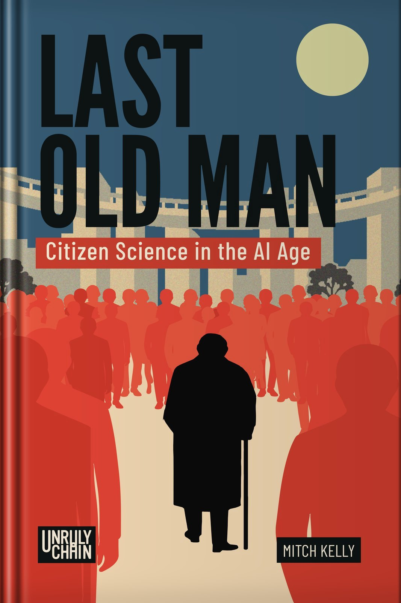

Last Old Man
Citizen Science in the AI Age
By Mitch Kelly
Announced · Unruly Chain


About the book
Last Old Man
Last Old Man explores citizen science in the AI age: what people may be able to investigate, understand, and contribute as the tools of research become more accessible. Aging and the possibility of rejuvenation bring those questions into personal focus.
At its center is a person choosing to experience natural aging while imagining the possibility of beginning again. The scientific questions and the lived experience belong to the same inquiry.